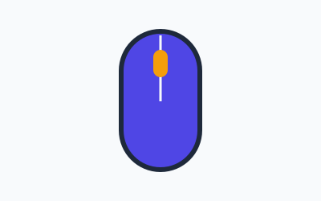
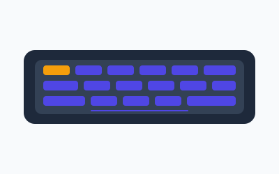
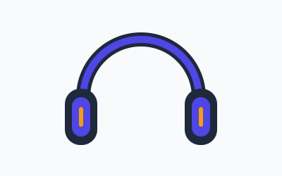

TersediaMouse Wireless MW-88
Aksesori Input
Rp185.000
Mouse wireless 2,4 GHz dengan sensor presisi 1600 DPI.

Best SellerAksesori Input
Rp650.000
Keyboard mekanis 87 tombol dengan switch biru untuk kerja lama yang nyaman. Tata letak tanpa blok numerik menyisakan ruang lebih lebar buat mouse tanpa mengorbankan tombol fungsi.
| Kode Produk | KX-210 |
|---|---|
| Kategori | Aksesori Input |
| Status | Best Seller |
| Tipe Switch | Mekanis biru (taktil, berbunyi saat ditekan) |
| Jumlah Tombol | 87 tombol tanpa blok numerik |
| Koneksi | USB-C berkabel |
| Panjang Kabel | 1,8 meter |
| Dimensi | 360 × 135 × 38 mm |
| Berat | 890 gram |
| Garansi | 1 tahun |

TersediaAksesori Input
Rp185.000
Mouse wireless 2,4 GHz dengan sensor presisi 1600 DPI.
Layar
Rp1.899.000
Monitor IPS 24 inci full HD yang jernih untuk kerja tabel & laporan.

TersediaAudio
Rp425.000
Headphone over-ear dengan bantalan lembut untuk rapat audio jangka panjang.